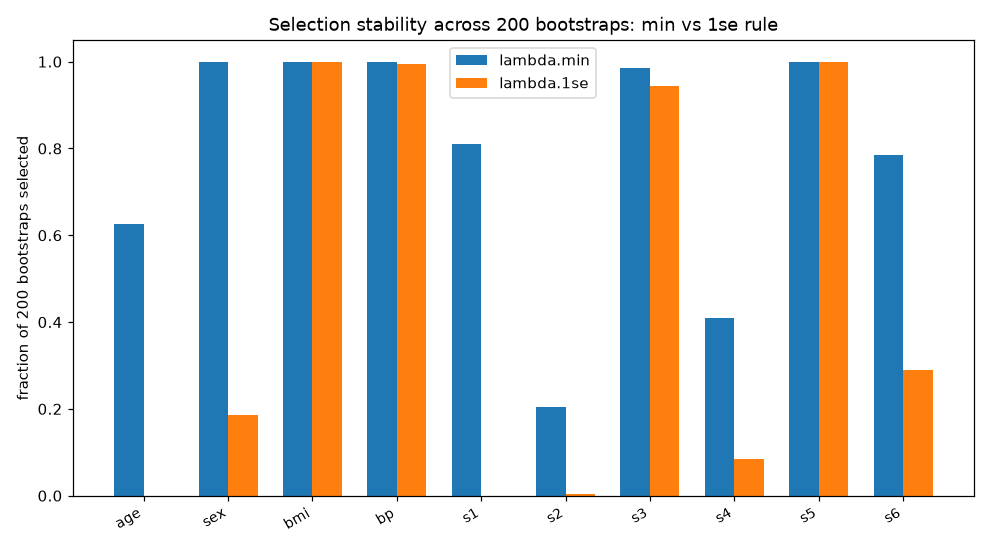

← back to the main walkthrough · repo
The simulation study compares the minimum-lambda and 1se-lambda tuning rules across sample sizes, dimensions, and correlations, and finds the 1se rule more conservative. This follow-up asks the same question on real data: the diabetes progression set (442 patients, 10 standardized baseline predictors), with selection stability measured directly by bootstrapping 200 times and recording which predictors each rule keeps.
| rule | lambda | selected predictors |
|---|---|---|
| lambda.min | 1.20 | sex, bmi, bp, s1, s3, s5, s6 (7 of 10) |
| lambda.1se | 7.89 | bmi, bp, s3, s5 (4 of 10) |


| predictor | selected by min, fraction of bootstraps | selected by 1se, fraction of bootstraps |
|---|---|---|
| bmi | 1.00 | 1.00 |
| bp | 1.00 | 0.99 |
| s5 | 1.00 | 1.00 |
| s3 | 0.98 | 0.94 |
| sex | 1.00 | 0.18 |
| s1 | 0.81 | 0.00 |
| s6 | 0.79 | 0.29 |
| age | 0.62 | 0.00 |
| s4 | 0.41 | 0.09 |
| s2 | 0.20 | 0.01 |
The 1se rule keeps exactly the four predictors both rules agree are rock-solid (selected in at least 94% of bootstraps under either rule). Everything the min rule adds on top, sex, s1, s6, age, is marginal: kept often by min, dropped almost always by 1se. That is the same conservatism the simulation found, now visible on real data: the 1se rule trades those borderline predictors for a smaller set that does not wobble across resamples.
Script: analysis/ in the repo.